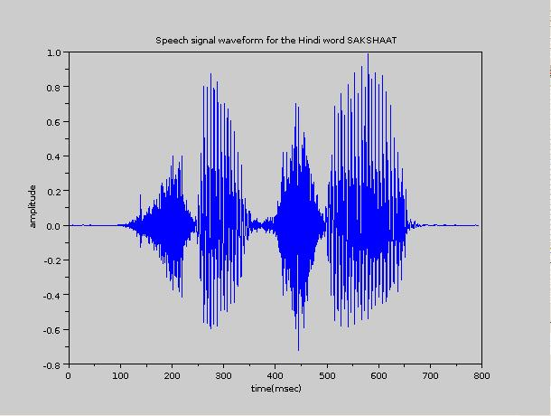
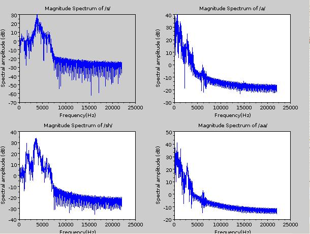
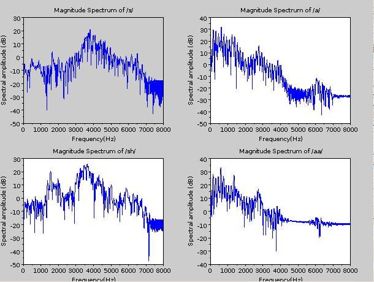
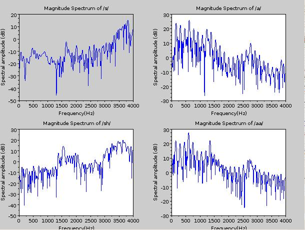
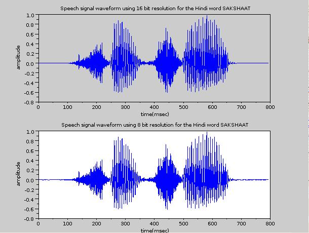
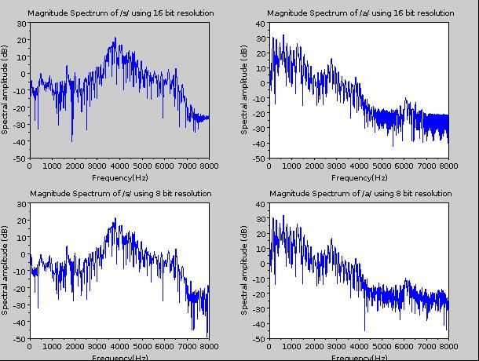
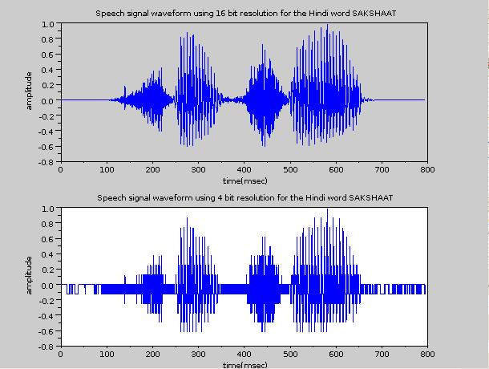
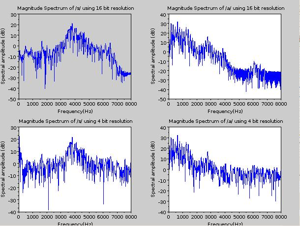
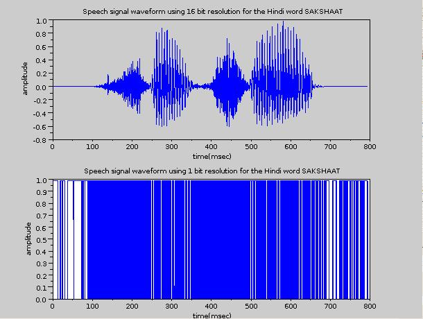
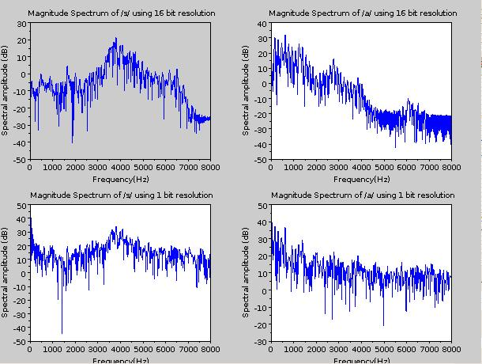

Shakshat Virtual Lab 
INDIAN INSTITUTE OF TECHNOLOGY GUWAHATI
Introduction
Speech signal processing on a digital machine needs sampling and storing of the analog version of the speech signal generated at the output of microphone. Sampling frequency is the parameter that controls the sampling process. The number of bits per sample is the parameter that controls the bit resolution. The intelligibility, amount of information and also the perceptual quality of speech depends on these two parameters. The experimental analysis to learn the significance of these two parameters is the aim of this experiment.
Sampling theorem and sampling frequency
The sampling of analog signal is based on sampling theorem. The sampling theorem states that if fm is the maximum frequency component in the analog signal, then the information present in the signal can be represented by its sampled version provided the number samples taken per second is greater than or equal to twice the maximum frequency component. The number of samples/second is more commonly termed as sampling frequency fs. According to sampling theorem, fs should be greater than or equal to 2 fm.
The speech signal has frequency components in the audio frequency range (20 Hz to 20 kHz) of the electromagnetic spectrum. This is the reason for perceiving the information present in the speech signal by human ears. The fundamental question is upto what range of audio frequency, the speech signal has frequency components. We can analyze this experimentally by considering the whole audio range. The standard sampling frequency to sample the entire audio range is 44.1 kHz. This is because, 20 kHz is the maximum frequency component and allowing some guard band, the sampling frequency has been set at 44.1 kHz. Let us consider the speech signal for the Hindi word SAKSHAAT shown in Figure 1 and spectra for selected different 30 msec segments as given in Figure 2.

Figure 1: Speech signal of the Hindi word SAKSHAATsampled using 44.1 kHz sampling frequency.

Figure 2: Magnitude spectra of selected 30 msec segments of the speech signal given in Figure 1 which is sampled at 44.1 kHz.
As it can be observed from different spectra shown in Figure 2, there are no significant frequency components in the spectrum beyond about 7.5 kHz. This observation shows that 44.1 kHz sampling is too high value to capture the information present in the speech signal. Since information is upto about 7.5 kHz, 16 kHz seems to be optimal. Figure 3 shows the spectra for the same segments shown in Figure 2, but computed from the speech signal sampled at 16 kHz sampling frequency.

Figure 3: Magnitude spectra of selected 30 msec segments of the speech signal given in Figure 1 which is sampled at 44.1 kHz.
As it can be observed from the Figure 3, most of the speech signal has frequency components only upto 8 kHz. Thus 16 kHz seems to be optimal sampling frequency for the case of speech.
Telephone bandwidth speech
As shown above in Figure 3, the speech signal has frequency components upto 8 kHz and hence 16 kHz is the optimal sampling frequency. However, when telephone communication started, with bandwidth being a precious resource, the speech signal was passed through an anti-aliasing low pass filter with cutoff frequency of 3.3 kHz and sampled at 8 kHz sampling frequency. Thus the speech signal collected over telephone networks will have a message bandwidth of about 4 kHz. Figure 4 shows the spectra for the same segments shown in Figure 1 and 2, but computed from the speech signal sampled at 8 kHz sampling frequency.

Figure 4: Magnitude spectra of selected 30 msec segments of speech sampled at 8 kHz.
As it can be observed from Figure 4, information beyond 4 kHz is eliminated in case of telephone bandwidth speech. Even though the sampling frequency seems to be fine for sounds like a and aa, it severely affects other sounds like s and sh. However, information upto 4 kHz bandwidth seem to be sufficient for intelligible speech. If the sampling frequency is further decreased from 8 kHz, then intelligibility of speech degrades significantly. Hence 8 kHz was chosen as the sampling frequency for the telephone communication. By listening to the three files, namely, file sampled at 44.1 kHz, file sampled at 16 kHz and file sampled at 8 kHz, one can observe difference in the naturalness between the speech sampled at 8 kHz and other higher sampling frequencies. Thus wherever possible, the speech signal sampled 16 kHz should be used for signal processing.
Narrowband v/s wideband speech
The speech signal sampled at 8 kHz is termed as narrowband speech and the speech signal sampled at 16 kHz is termed as wideband speech. For practical speech signal processing, if the speech signal is available from a telephone or mobile channel, we have left with little option, but to process the speech signal at 8 kHz sampling frequency. Recently, methods are being developed to convert narrowband speech to wideband speech. Alternatively, if the speech signal is available from a wideband channel, then 16 kHz sampling frequency is suggested. The final proposal is 16 kHz is the optimal sampling frequency for speech. Rest of the study about bit resolution is therefore performed using wideband speech.
Bit resolution for speech
After the sampling frequency, the next important parameter in the digitization process of speech is bit resolution. The number of bits used for storing each sample of speech is termed as bit resolution. The number of bits/sample in turn depends on the number of quantization levels used during analog to digital conversion. More the number of quantization levels, finer will be the quantization step and hence better will be the information preserved in the digitized form. However, more will be the requirement of number of bits/sample. Hence it is a trade off between the number of bits and information representation. The effect of bit resolution can be analyzed experimentally. For this experiment the optimal sampling frequency of 16 kHz can be used as proposed earlier.
All speech signal processing applications invariably use 16 bits/sample as bit resolution. The number of quantization levels will therefore be 216=65536 and are found to be optimal for preserving information present in the analog version of the speech signal. The next lower bit length possible with binary power is 8 bits. With 8 bits, the number of quantization levels will be 28=256. As it can be observed, the number of quantization levels are significantly lower compared to the 16 bit case and hence poor representation of information in the quantized signal. Figure 5 shows the waveforms of the speech signal for the same text represented using 16 bit and 8 bit resolution. Figure 6 shows the spectra of the selected segments from the 16 bit and 8 bit data.

Figure 5: Speech signal waveforms of 16 bit resolution and 8 bit resolution cases

Figure 6: Magnitude spectra of selected 30 msec segments of speech with 16 bit and 8 bit resolution cases
The waveforms and magnitude spectra for 16 bit and 8 bit cases seem to be similar visually. Thus there may not be significant decrease in the information content represented by 16 bit and 8 bit cases. However, by digitization we know that there is significant decrease in the number of quantization levels. By listening to the speech signals one can make out decrease in perceptual quality, especially, perception of some quantization noise.
The next lower bit resolution possible in terms of binary power is 24=16. That is, the binary word will have length of 4 bits and there will be 16 different quantization levels. Figure 7 shows the waveforms of the speech signal for the same text represented using 16 bit and 4 bit resolution. Figure 8 shows the spectra of the selected segments from the 16 bit and 4 bit data.

Figure 7: Speech signal waveforms of 16 bit resolution and 4 bit resolution cases.

Figure 8: Magnitude spectra of selected 30 msec segments of speech with 16 bit and 4 bit resolution cases
As it can be observed from Figures 7 and 8, both the waveform and spectra are significantly distorted compared to the 16 bit versions. Perceptually also their will be lot of quantization noise. Thus this shows that 4 bit is not recommended as bit resolution for the case of speech.
The lowest possible bit resolution in terms of binary power is 21=2. The binary word will have 1 bit length and there are two quantization levels. Figure 9 shows the waveforms of the speech signal for the same text represented using 16 bit and 1 bit resolution. Figure 10 shows the spectra of the selected segments from the 16 bit and 1 bit data.

Figure 9: Speech signal waveforms of 16 bit resolution and 1 bit resolution cases.

Figure 10: Magnitude spectra of selected 30 msec segments of speech with 16 bit and 1 bit resolution cases.
Figures 9 and 10 indicate the waveform and spectra are significantly degraded in case of 1 bit resolution. By visual perception we may conclude that there may not be any information left in the speech signal with 1 bit resolution. An interesting observation will be to listen to the speech signal with 1 bit resolution. Perceptually we can still make out the information present in the speech signal, ofcourse with lot of quantization noise. This makes us to understand one important point about speech, that is, information lies in the sequence, not only by the amplitude value of the samples.
All these studies indicate that, 16 bit is best preferable bit resolution and 1 bit is the worst case. Definitely 4 bit resolution is not preferable. The choice is between 8 and 16 bits. Even though by visual inspection both signals look similar, listening to the signals do infer that the quantization level is audible in case of 8 bits. Therefore wherever possible, 16 bit resolution is preferable. Hence 16 bit resolution is proposed as the optimal bit resolution. Finally it is be mentioned at this point that all these discussion is with respect to uniform quantization. There are several alternative coding techniques which need bit resolution far less than 16 bits. They will be studied as part of speech coding. At the first level this information is sufficient to appreciate the significance of bit resolution.
Bit rate for speech communication
Bit rate is defined as sampling frequency multiplied by bit resolution. For land line telephone, the sampling frequency followed is 8 kHz and bit resolution is 8 bits and hence the bit rate is 64 kbps. For mobile communication, even though the sampling frequency remains same at 8 kHz, the bit resolution varies over a wide range starting from 8 bits/sample to 0.25 bits/sample and accordingly we have wide bit rate ranging from 64 kbps to as low as 2 kbps. Alternatively, in case of wideband speech like television broadcasting, the bit rate may be as high as about 256 kbps.